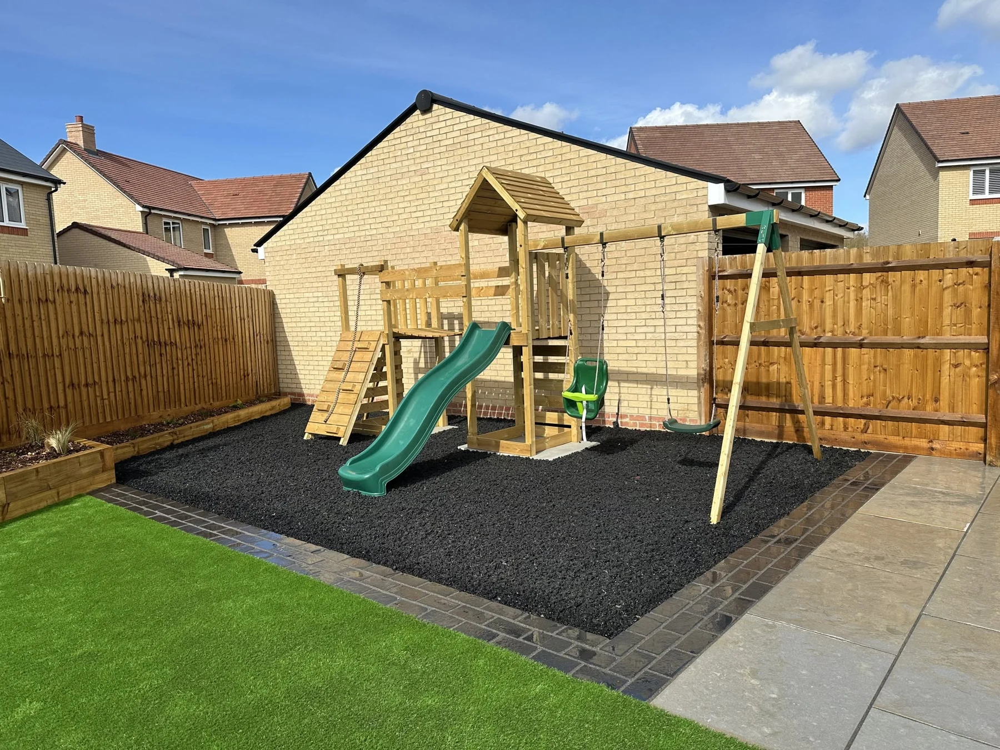

HARLOW & SURROUNDING AREAS
Real spaces.
Distinctive details.
Explore the work, from preparation to finished outdoor spaces. Tap any photo to see the complete supplied image.
Hard landscaping specialistsTailored outdoor spacesFree quotes
OUR PROJECTS
Take a closer look.
Original captions remain in the supplied photos. Open an image to see it in full.
BEHIND THE FINISH
Watch us work.
A closer look at the work that goes into your outdoor space. See the details take shape in our project videos below.
YOUR NEXT OUTDOOR PROJECT
Tell us what
you have in mind.
Landscaping enquiries for Harlow, Epping, Cambridge, Bishop’s Stortford and Loughton. Send your postcode and a few details to get started.
Prefer email? info@bespokelandscapingandspaces.co.uk
Photographs of the work and access are always helpful. You can attach them to your message before sending.